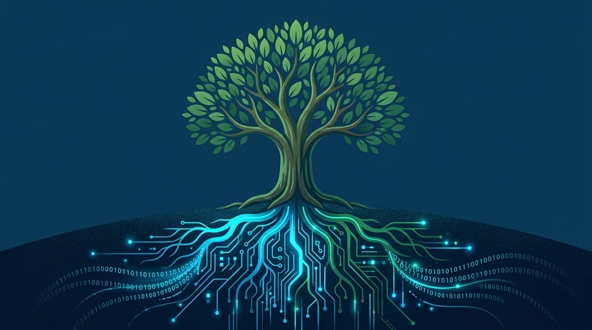

The Canadian forestry sector is in the midst of a digital transformation. As regulatory requirements from provincial ministries grow more complex and pressure on productivity increases, forestry companies can no longer afford to manage their operations with notebooks and spreadsheets. A forest management software solution adapted to the realities of Canadian terrain has become an essential investment. This guide presents everything you need to know to choose and deploy the right forestry software solution.
What is forestry software and why is it essential?
A forestry software platform is a digital system designed to centralize, automate and optimize all activities related to forest operations. Unlike generic office tools, it is purpose-built to address industry-specific needs: harvest site tracking, heavy equipment management, geospatial data collection, compliance with government standards and communication between field crews and the office.
In a context where every day of operations can cost thousands of dollars, having a system that eliminates duplication, reduces data entry errors and accelerates information flow is not a luxury but an operational necessity. Forest management software acts as the central nervous system of your company, connecting field teams, office managers and work order clients in a continuous and reliable data flow.
The challenges facing forestry companies without digital tools
Many forestry companies across Canada still operate with largely manual processes. The consequences are numerous and costly:
Excessive paperwork remains the primary burden. Handwritten timesheets, production reports scribbled in notebooks and triplicate delivery slips lead to billing delays, transcription errors and lost documents. When a notebook gets wet or lost at a remote job site, weeks of data can disappear.
Manual GPS tracking is another major challenge. Using a handheld GPS without software integration forces workers to manually transfer waypoints and tracks to a desktop computer. This process is not only time-consuming, but it multiplies the risk of positioning errors, a critical problem when it comes to respecting authorized cutting boundaries.
Disconnected data between field and office creates an information gap that hinders decision-making. The operations manager at the office does not know in real time what is happening at the job sites, and field operators do not have access to the latest prescriptions or plan changes. This siloing of information causes delays, misunderstandings and sometimes regulatory non-compliance.
Essential features of good forestry software
When choosing forestry software in Canada, certain features are absolutely critical:
GPS tracking and mapping
The software must offer integrated GPS tracking with automatic track recording, waypoint creation and display on offline maps. Support for mapping formats such as MbTiles and WMS/WMTS layers is essential for overlaying government data (lot boundaries, protected areas, forest roads) directly on the field map.
Fleet management and maintenance
With heavy equipment fleets worth millions of dollars, fleet management is a fundamental pillar. The software must enable tracking of engine hours, preventive maintenance scheduling, work order management and rapid equipment identification via QR codes. Every hour of unplanned downtime can cost thousands of dollars in lost production.
Regulatory compliance and government reports
In Canada, compliance with provincial forestry regulations is non-negotiable. Good forestry software must facilitate the generation of field activity reports, volume tracking by species and documentation of environmental inspections. Exporting data in government-required formats eliminates hours of manual reformatting.
Offline operation
The reality of Canadian forestry job sites is the frequent absence of cellular coverage. Any forestry software worthy of the name must operate 100% offline and synchronize data automatically as soon as a connection becomes available.
How modern solutions transform daily operations
Platforms like ForestLogix have been developed specifically for the realities of Canadian forestry terrain. By centralizing the management of job sites, documents, price lists, prescriptions, production and deliveries in a single system, ForestLogix eliminates the data fragmentation that paralyzes so many forestry companies.
The transition to digital does not happen overnight: it typically begins with deploying a field mobile application like MobileLogix, which allows operators to enter their data directly on a rugged tablet. Timesheets, fuel tracking, production reports, georeferenced photos -- everything is done in a few taps rather than filling out paper forms.
Field mobile application vs. office-only solutions
A forestry software solution limited to the office forces field workers to manually transcribe their data at the end of the day or week. This model is not only inefficient, but it introduces a critical delay between data collection and its availability for management.
An integrated field-office approach, combining MobileLogix in the field and ForestLogix at the office, ensures that data flows in real time. The operator enters the information once, at the moment the event occurs, and that data is immediately available to the office manager at the next synchronization.
Real-time synchronization: the link between field and office
The keystone of an effective forestry system is bidirectional synchronization between field devices and the central server. SyncLogix performs this function by automatically transferring data as soon as a network connection is detected, whether via Wi-Fi at the forest camp or cellular network at the road's edge. The office manager sees production data appear in real time, and planning changes sent from the office are instantly available to field crews.
Return on investment of forestry software
The investment in forest management software pays for itself quickly through several avenues:
Administrative time saved is the most immediate gain. Eliminating double data entry, automatic report generation and accelerated billing allow you to recover dozens of hours every month. Studies on digital transformation in field operations show that automating administrative workflows can reduce paperwork and double-entry time by up to 40%.
Reduced data entry and calculation errors translate directly into financial savings. Measurement errors, billing omissions and inaccuracies in production reports can cost thousands of dollars per month. A digital system with automatic validation eliminates the vast majority of these errors.
Simplified regulatory compliance avoids penalties and delays related to non-compliance. When data is collected in a structured manner from the field, generating government reports becomes a matter of a few clicks rather than several days of work.
Go digital now
The digital shift in forestry is no longer a question of "if" but "when." Canadian forestry companies that adopt forestry software adapted to their needs gain a competitive edge in terms of productivity, compliance and profitability. Whether you are a small forestry contractor or a large harvesting company, there are modular solutions that adapt to your reality.
G.A. Logix has been supporting Canadian forestry companies in their digital transformation for over 20 years. Contact our team for a personalized demonstration and discover how our solutions can transform your forestry operations.